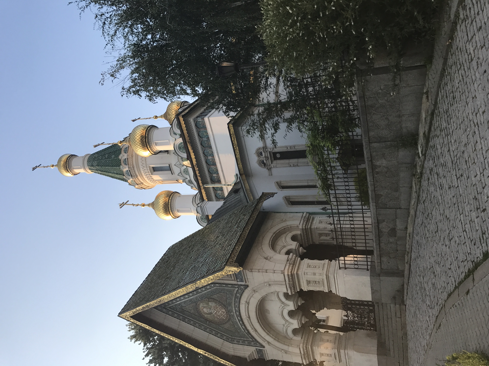
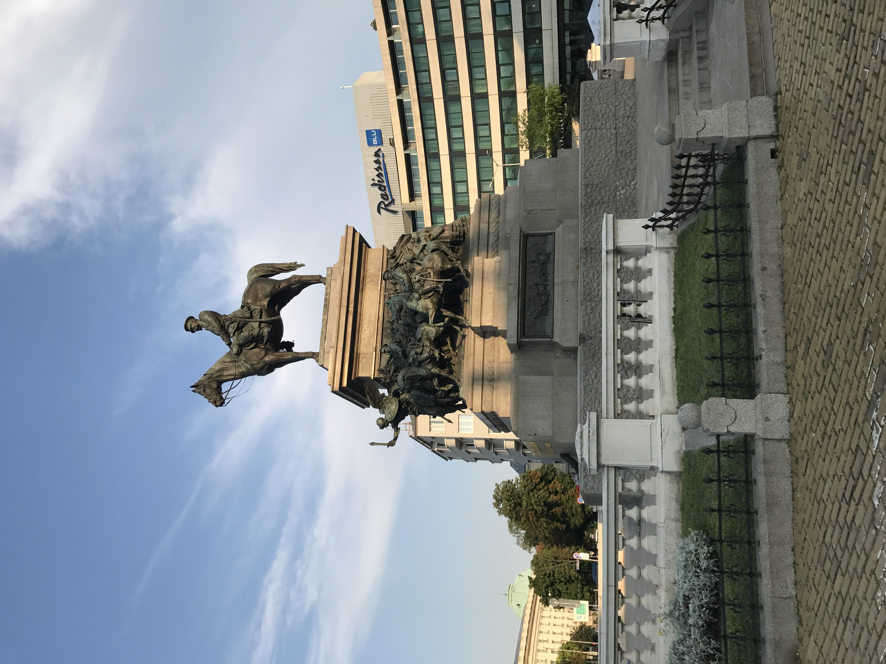
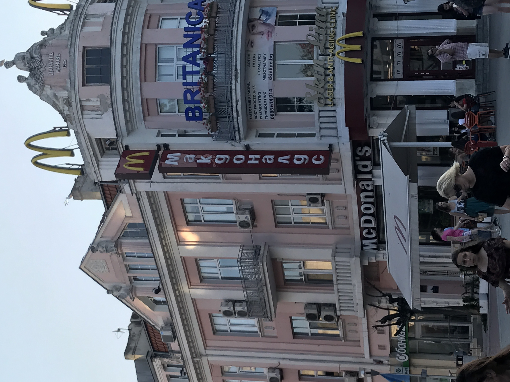

Pictures
Church of St Nicolus
This is a very famous Eastern Orthodox church in the Capitol of Bulgaria. It was built around 1200 A.D and is one of the oldest buildings in Bulgaria.
Monument to the Tsar Liberator
This is a monumnet dedicated to Alaxander II who liberated bulgaria from Ottoman rule in the Turkish war of 1877.
McDonalds
I have eaten at a McDonalds in almost every foreign country I have visited. At this location they actually had a McFlurry that had Rolos as the topping! It is interesting to see how the building is historic contrasted with the standard McDonalds in the United States that have their own buildings.